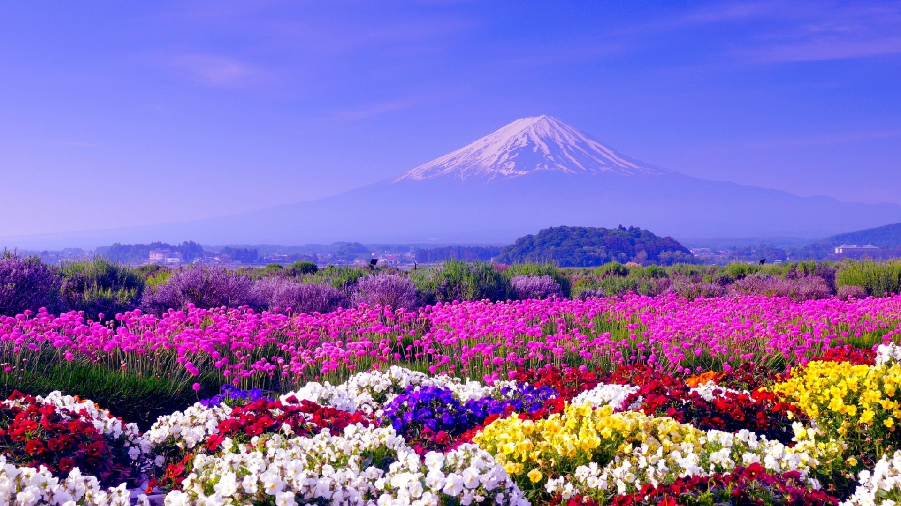
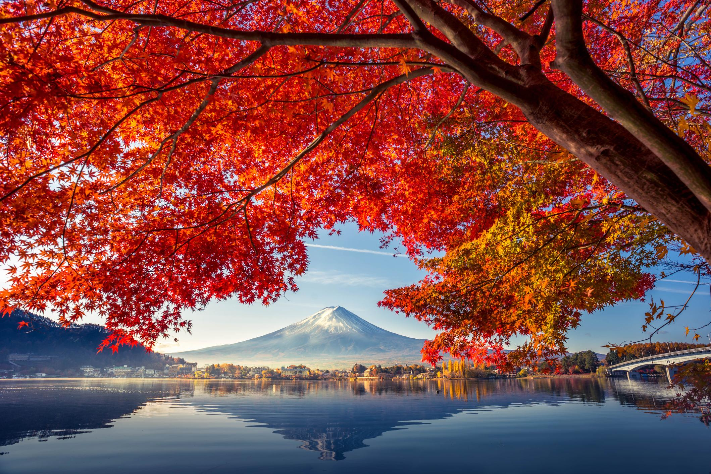
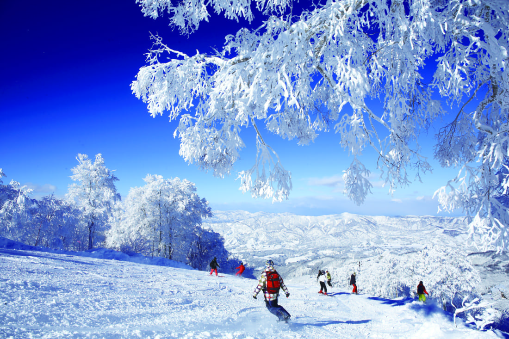

🌸 Spring / 春 (Haru)

Spring in Japan is celebrated for its iconic cherry blossoms. Hanami (flower viewing) is a cherished tradition during this season, bringing people together under blooming sakura trees.
☀️ Summer / 夏 (Natsu)

Japanese summers are lively with fireworks festivals (hanabi), yukata, and traditional dances. Regions like Kyoto come alive during Gion Matsuri, one of Japan's biggest festivals.
🍁 Autumn / 秋 (Aki)

Autumn is known for its fiery foliage (kōyō). People travel to mountains and temples to witness the beauty of red maple leaves and crisp autumn air.
❄️ Winter / 冬 (Fuyu)

Winter brings snow-covered landscapes, cozy hot springs (onsen), and snowy festivals in places like Sapporo. It's also ski season in northern Japan.